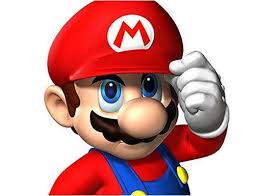
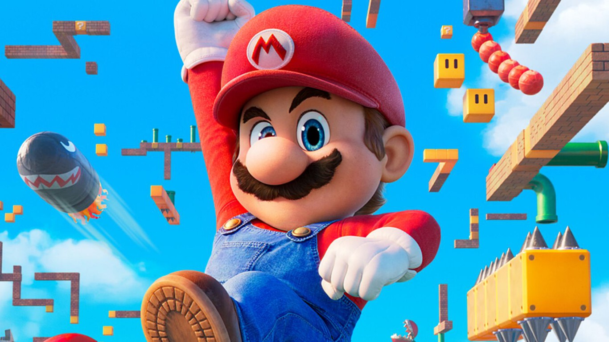
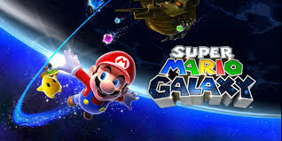

la historia de Mario Bros

Fue creado por el diseñador japonés Shigeru Miyamoto y vio la luz en Japón en 1981, donde su primera aparición fue en Donkey Kong, en ese entonces era un carpintero y no un plomero como en la actualidad; llevaba el nombre de Jumpman, portando la simbólica gorra roja con la que todos lo reconocemos. Posteriormente, Miyamoto renombró al personaje como Mario Bros y así mismo creó a su hermano Luigi para que en 1983 salieran juntos en el videojuego Mario Bros, dos años después, el 13 de septiembre de 1985 salió Super Mario, impactando a los gamers de ese momento; el videojuego fue producido por la compañía de Nintendo para la consola Nintendo Entertainment System (NES). Aquí, tiene la misión de rescatar a la princesa Peach, por lo que debe cruzar diversos mundos y vencer los obstáculos que se van atravesando en su camino. A través del tiempo, el videojuego se ha ido adaptando y evolucionando, principalmente en el aspecto de los gráficos, así como los escenarios que se han ido presentando y ¿por qué no? los papeles de Mario, pues también ha sido piloto y hasta bailarín. Sin duda, esta saga no sería lo mismo sin los fantásticos personajes que acompañan a Mario en todas sus travesías. En el bando enemigo, por un lado, se encuentra la tortuga Bowser, rey de los Koopas y su hijo Bowser Jr., por otro, está Luigi, la princesa Peach, los coloridos Toads y por supuesto Yoshi, el dinosaurio y amigo fiel de Mario.

iene, además, una serie de importantes elementos gráficos que forman parte de la identidad del videojuego y que lo hacen más emocionante, pues Mario los puede usar en su trayecto y cumplir su misión. Hablamos de las monedas con que se pueden conseguir vidas extras, las tuberías y los cañones mediante los cuales el personaje puede transportarse, los muy reconocibles champiñones que permiten aumentar o disminuir de tamaño y flotar o saltar más alto; las estrellas, las cuales dan a Mario inmunidad a todo, excepto al caer de los precipicios, y, finalmente, los trajes de Mario que tomaban diferentes formas de animales como mapache, rana, gato o abeja.
Super Mario tiene una lista con gran variedad de títulos que han sido creados para arcade y consolas, comenzando con Super Mario que contaba con 32 subniveles y se vendieron alrededor de 10 millones de cartuchos.
En 1990, salió Super Mario World, aquí el personaje de Yoshi hizo su debut, anteriormente no se había podido debido a las limitaciones gráficas de la compañía, además de este personaje, se añadieron nuevos elementos como la Cape Feather con la que Mario podía volar por un corto tiempo y el Spin jump, un estilo de salto Para 1992, surgió Mario Kart, juego de carreras, que tenía distintos modos tanto en el individual como en el multijugador, donde se podía ver a los dos jugadores de manera simultánea, aunado a esto, en el desarrollo, se aplicaron gráficos en modo 7 con los que se logra dar una impresión de 3D. Cuatro años después, salió a la venta Super Mario 64, el primer juego que deja lo bidimensional para dar el salto a lo tridimensional. Por primera vez, Nintendo introdujo el joystick, lo que permitió una mejor movilidad y manejo del personaje, pues ya no sólo saltaba como en las entregas anteriores, sino también podía agacharse, gatear, nadar, por mencionar algunas actividades. Ya entrando al nuevo milenio, en 2002, surgió Super Mario Sunshine, el cual se desarrollaba en “Isla Delfino”, añadió un elemento nuevo, una mochila de agua. Fue muy elogiado por su banda sonora, la calidad de sus gráficos, creatividad y diversidad; recibió el premio Best platformer on GameCube. En 2006, se lanza New Super Mario, donde se mezclaban los gráficos 2D con la tridimensionalidad de los personajes y en 2012 tendría su secuela. Para el 2007, Mario saldría de este mundo, el título Super Mario Galaxy se ambienta en el espacio exterior y se lanzó para su consola Wii; en este juego, el modo multijugador consistía en que dos personas podían manejar al personaje: mientras uno controla los movimientos, el otro recolecta los trozos de estrella, además surgían nuevos elementos como la estrella de lanzamiento con la que se lanzaba de un planeta a otro.
Los títulos no paran ahí, en 2015 nació Super Mario Maker (secuela en 2019), donde los jugadores tenían la posibilidad de crear y editar los niveles, así como compartirlos en un ranking. Este videojuego fue nominado en algunos premios como “Mayor revelación” y ganó otros siendo el “Mejor juego familiar y social”. Dos años después, se produjo Super Mario Odyssey, un título creado para Nintendo Switch, con un estilo parecido a Mario 64. En donde, Mario se alía con un alienígena llamado Cappy para salvar a Peach y a la hermana de su nuevo aliado y viajan en la Odyssey, una nave con forma de sombrero y en el año 2018 Nintendo lanza Super Mario Party, un juego que cuenta con 80 minijuegos y 20 personajes jugables. Finalmente, tenemos Super Mario 3D All-Stars; ésta es la entrega que tiene Nintendo para la celebración de los 35 años: una compilación de títulos como Super Mario 64, Sunshine y Galaxy, adaptados para Nintendo Switch, los gráficos están en alta resolución, así también, hay una adaptación de los controles a los mandos joy-con y, por si fuera poco, se añadieron las bandas sonoras de dichos videojuegos. La compilación estará disponible hasta el 31 de marzo de 2021 El impacto de Mario Bros ha sido tanto que en España hay una calle con su nombre, y desde 2016 cada 10 de marzo se celebra el “Día de Mario” y no por la fecha de su lanzamiento, sino por el propio nombre del personaje. Se toman las tres primeras letras del mes (marzo) y el 10 simulando “IO”, MAR10. La saga de Super Mario Bros, no queda duda, ha dejado huella a lo largo del tiempo y, claro, en las generaciones que van pasando, que siguen disfrutando de las aventuras y experiencias con Mario. Este videojuego y su personaje Mario Bros se ha marcado como un gran referente en el mundo de los videojuegos, dejando un gran legado.